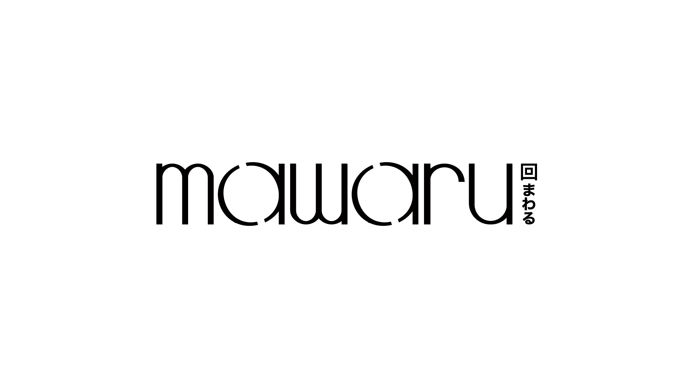
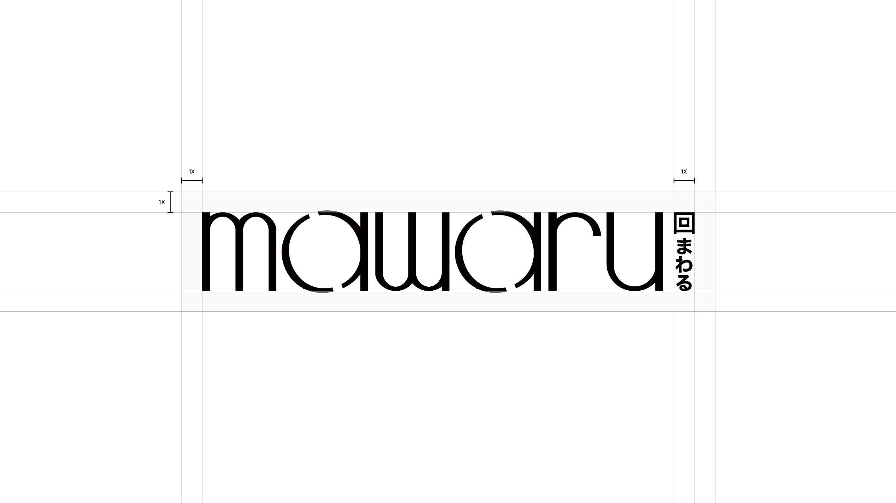

Light Guidy
Guidy는
기존의 반복적인 로고 가이드 제작 과정을
줄이기 위해 만든 Illustrator 기반 로고 가이드 자동화 실험입니다.
원본 로고는 수정하지 않고 별도 레이어에
그리드, 클리어스페이스,
nX 등 측정 기준을 시각화하여 브랜드 가이드 제작에 필요한 기본 구조를
빠르게 생성합니다. 원형 도형의 시각 보정을 고려해 실제 외곽이 아닌
직선형 글자 기준으로 가이드선을 조정했으며, 얇은 그리드선, 굵은 측정선,
Pretendard 라벨, 투명도 있는 클리어스페이스 면을 적용했습니다.
최종 결과물은 로고 원본을 보존하면서도 디자이너가 바로 확인하고
수정할 수 있는 로고 그리드 시스템으로 정리했습니다.

